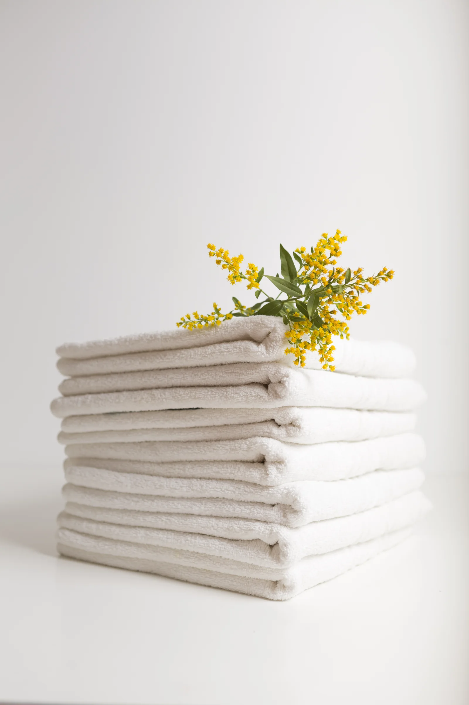
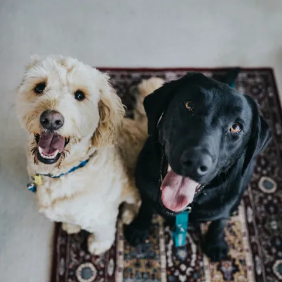

Enchanted Circle Home Care & Concierge
Enjoy peace of mind knowing your home is cared for while you’re away. We provide reliable property oversight, vendor coordination, and personalized home preparation, tailored to your needs.
Book with usThe comfort of knowing your home is cared for.
Enchanted Circle Home Care & Concierge provides reliable, hands-on care for homes throughout Northern New Mexico. We get to know your property, your routines, and the little things that matter to you, so you can spend less time managing your home and more time enjoying it.
ServicesRecurring residential cleaning
Consistent weekly, biweekly, or monthly upkeep for homes that deserve a dependable routine.
Vacation and second-home care
Preparation and reset support for homes that must feel ready for arrivals, departures, and seasonal stays.
Regular home check-ins
Regular visits that put trusted local eyes on the property between stays.
Detailed first clean
A thorough initial service that establishes the baseline before recurring maintenance begins.
Care you can feel the moment you
walk through the door.



It matters who you trust
your home with.
For Hannah, this work has always been personal. What began with caring for homes throughout Taos has grown naturally over the years, often through the trust and referrals of the people she’s worked with along the way.
Hannah and Devin have called Taos home for nearly a decade. What began with cleaning homes has naturally grown into something more: trusted home care for people who live here full-time or spend part of the year away.
Today, Hannah and her small, trained team provide cleaning, home care, and concierge services, bringing the same personal attention and dependability to every home they care for.
Get to know usHomeowners talk.
We’re grateful for
what they have to say.
Leave a review“It can be impossible to find anyone to help clean your house who shows up, is dependable, hardworking, trustworthy, pleasant, thorough and who even goes the extra mile. Hannah and her business, Taos Best Cleaning, is all that and more!...”
“We have had Hannah clean our house for almost 2 years now and would highly recommend her service. She does a great job, is efficient, and communicates well. It is so nice to have someone we can trust and that cleans well!”
“Hannah and crew did a great job cleaning our home before our Thanksgiving vacation. She pays attention to details and even took the time to clean out our fireplace. Thank you.”
“Hannah is the real deal. She is efficient and detail oriented.. She communicates clearly, and is prompt with her schedule. I’ve used many services over the years and Hannah’s is truly one of the best.”
“Hannah is Incredibly professional, on a level that is rare in Taos. Trust worthy. Fantastic communication and above all else, excellent and detail oriented. Highly recommend!!”
“Hannah is top notch. Her attention to detail in my home is unparalleled and the job performed always exceeds expectations. She is professional, trustworthy and dependable.”
Schedule a consultation and
private walkthrough.
Include these details in your inquiry. These help us prepare for the walkthrough.
- Property type and approximate size.
- Property location in or around Taos County.
- Desired service frequency.
- Whether the home is full-time, vacation, or a second residence.
- Access notes, timing preferences, or special requirements.